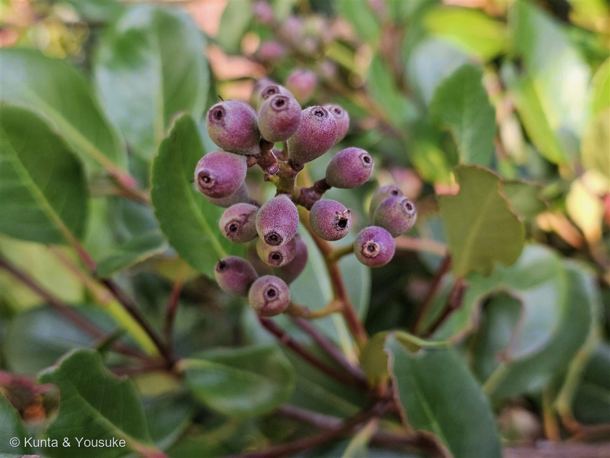
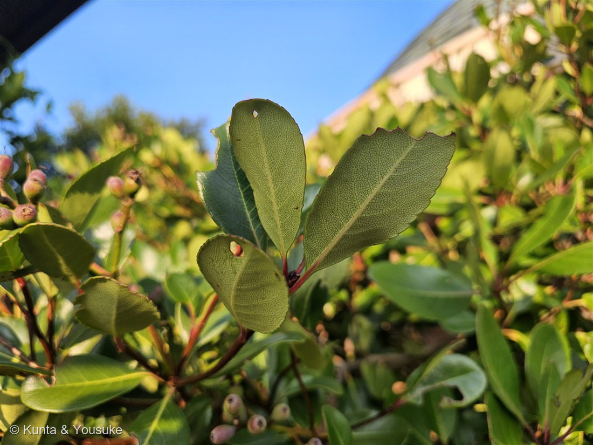
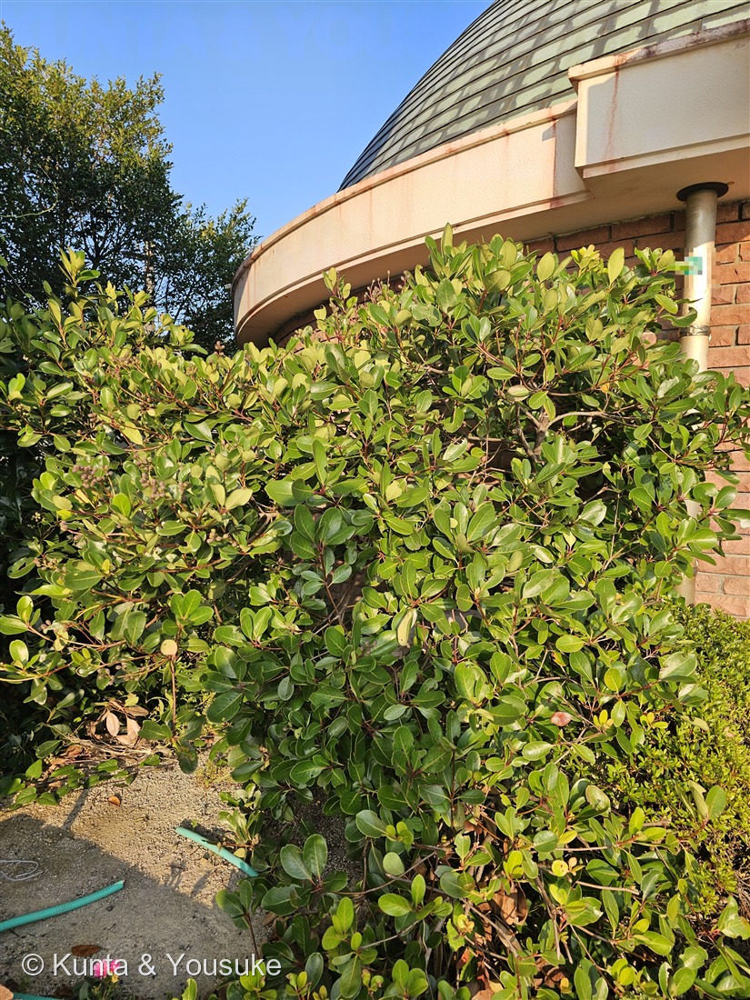

地図を読み込んでいるよ…
🔍 写真も地図も、押しているあいだ拡大して見られるよ（スマホは指を置いてすこし待ってね）。
🌍 の地図＝この子がもともと自生している場所を緑に。日本（本州の宮城・山形県以南、四国、九州、沖縄）・朝鮮半島・台湾の、暖かい海岸近く。日本の在来種。
⭐日本の在来種——本州の宮城・山形県以南、四国、九州、沖縄と、朝鮮半島・台湾の、あたたかい海岸のちかくに自生しているよ。⚠北海道と、青森・岩手・秋田は塗っていない（分布の北のふちが宮城・山形あたり）。⭐生垣や街路樹としてはもっと北でも植えられているけど、地図は自生（もともとの分布）を塗っているんだ。⚠だから福島県では絶滅危惧II類（VU）、鳥取県では準絶滅危惧（NT）——港の植え込みではふつうに見るのに、野生では貴重、というふしぎな子だよ。
⚠ 地図は国（日本と中国だけ県・省）までしか塗れないから、ほんとうの分布より広く見えていることがあるよ。地図はだいたいの場所。正確なところは、上の文を見てね。
シャリンバイ（車輪梅）
Rhaphiolepis indica (L.) Lindl. var. umbellata (Thunb.) H.Ohashi
別名 · テーチ木（奄美）／マルバシャリンバイ／ 原産 · 日本（宮城・山形県以南）・朝鮮半島・台湾の海岸／ 見どころ · ⭐萼の跡の輪＝リンゴと同じ「梨果」・車輪みたいな葉・大島紬を染める木
バラ科 · Rosaceae（シャリンバイ属 Rhaphiolepis・ナシ連 Maleae）── 030 バラ・043 イチゴと同じバラ科／リンゴ・ナシ・ビワと同じ「ナシ連」
名前と学名の由来 ── 車輪の葉と、梅の花
- 和名シャリンバイ（車輪梅）＝葉が枝先に、車輪のスポークみたいに放射状につく（写真②）＋花が梅（ウメ）に似た白い5弁花。車輪 ＋ 梅で、そのまんまの名前だよ。
- ⭐属名 Rhaphiolepis（ラフィオレピス）＝ギリシャ語の rhaphis（針）＋ lepis（鱗）。花のつけねにつく細い針のような小苞（しょうほう＝小さな鱗のような葉）から。ここも「体の特徴」を名前にしているんだ。
- 種小名 indica＝「インドの」。でも、この仲間の本拠は中国〜日本の東アジア。むかしの学名の「インド」は、東の方をふわっとまとめて指すことがあった。110 サルスベリの indica、136 トウモロコシの名前と正体のずれと、同じテーマだね。
- 変種名 umbellata＝「散形（さんけい）の」＝花が傘の骨のように集まってつくこと。
この植物のこと ── 潮風と排気ガスに、強い木
- 常緑の低木〜小高木で、高さ2〜6m。日本では宮城・山形県以南の本州、四国、九州、沖縄の、あたたかい海岸のちかくに自生する在来種だよ。
- ⭐乾燥・強い風・潮・排気ガスに、とても強い。だから街路樹や生垣にたくさん使われる（東京の銀座の街路樹にもいるんだって）。⭐燻太さんが撮った「港横の植え込み」は、まさにこの木の得意な場所。
- ⭐タンニンをたくさん含む。奄美大島では、この木をテーチ木（てーちぎ）と呼んで、大島紬（おおしまつむぎ）の染めに使う。煮出した液で染めては、鉄分の多い泥の田んぼで泥染め、をくりかえして、あの深い黒褐色を出すんだ。奄美市の「市の花」にもなっているよ。
- ⚠一方で、北のはしの方では減っている（福島県で絶滅危惧II類VU・鳥取県で準絶滅危惧NT）。ここは分布の北のふち。生垣ではふつうに見るのに、自生地では貴重、というふしぎな子。
⭐ この実は、小さなリンゴ ── 燻太さんの見立て
燻太さんが写真を見て、いちばん最初に言ったこと ──「果実はリンゴみたいな偽果なのかな」。⭐これ、当たりだよ。 しかも、今日の同定の決め手になった。
- 写真①の実のてっぺんに、へこんだ輪っかと、まん中の小さな穴が見えるよね。あれは萼（がく）が落ちたあとの跡。
- ⭐萼の跡が実の「頂上」にある＝花のとき、萼より下に子房があった＝子房下位（しぼうかい）。子房下位のとき、実になるのは子房だけじゃなくて、まわりの花托（かたく）も一緒にふくらむ。だからこれは真果ではなく、偽果。この形の実を梨果（りか／pome）と呼ぶんだ。
- ⭐梨果を作るのは、バラ科の中の「ナシ連（Maleae）」だけ。リンゴ・ナシ・ビワ・ナナカマド・そしておまけのカナメモチ。──萼の跡の輪っかひとつで、科と連まで一気に落ちた。
- 実は直径7〜12mmの球形。秋（10〜11月）に黒く熟して、白い粉をかぶる。今は7月だから、花のあとの、まだ若い実。赤紫はアントシアニンだよ。
- ⭐リンゴのおしりのブツブツ、あれと同じもの。次にリンゴを食べるとき、おしりを見てみてね。この子と同じ「萼の跡」がついてる。
⭐ ブルーベリーに似て見えるのは、偶然じゃない
燻太さんの「見た目は楕円形のブルーベリーみたい」も、ただの気のせいじゃないんだ。
- 023 ブルーベリー（ツツジ科）も、実は子房下位。だから実のてっぺんに萼の跡（王冠みたいなの）が残る。⭐「てっぺんに輪っかがある丸い実」という形は、子房下位という同じ体のつくりから来ている。科はぜんぜん違うのに、似た形にたどりつくんだね。
- ちがうところ＝シャリンバイは梨果（花托が果肉）／ブルーベリーは液果（実の中に小さな種がたくさん）。
- ⭐そして宿題がひとつできた。シャリンバイの熟した実は「黒く熟して白い粉をかぶる」。この白い粉＝ブルーム（ロウ）は、023でぼくたちが顕微鏡で見た、ブルーベリーの青の「2階建て」の2階（ロウのナノ構造の構造色）と同じもの。秋にこの子の熟した実を見に行って、黒紫が青っぽく見えるかどうか確かめたい。
⭐ 港の植え込みシリーズ ── そして087の宿題
- この子は、078 モクビャッコウ・087 ヤマモモと同じ「港」。⭐港に植えられる木には、共通点がある——厚くて硬い革質の葉／潮風に強い／照り返しと乾燥に耐える。だから港の植え込みは、似た顔ぶれになるんだ。
- ⭐⭐そして、ぼくにとっては宿題の回収でもある。087でヤマモモをモッコクと呼びかけて燻太さんに止めてもらったとき、ぼくが数えた「合ってる4つ」は、モッコクにも、トベラにも、シャリンバイにも、タブノキにも当てはまってしまった。──そのとき落としきれなかった「シャリンバイ」に、今日ちゃんと会えた。
- ⭐そして今回は、「合ってる数」を数えなかった。萼の跡の輪っかひとつが、モッコク（蒴果）も、トベラ（3つに割れる蒴果）も、ネズミモチ（液果・対生）も、ヤマモモ（核果・葉柄なし）も、まとめて落としてくれた。⭐効く証拠は、数じゃない。
同定について
⭐樹木は厳しめにチェックするルール（087で燻太さんと決めた）で、順番に。
- ⭐⭐⭐決め手＝果実の頂の環状の萼跡（＝梨果）。これひとつで、バラ科ナシ連まで確定。
- 葉：厚い革質・光沢あり・長楕円〜狭倒卵形・縁は上半分にだけ浅い鈍鋸歯・葉裏に網目の脈がくっきり・互生で枝先に束生（車輪状）。葉柄は短く（0.5〜1.8cm、ほぼ無柄のことも）赤い。
- 落とせた候補：カナメモチ／レッドロビン（同じナシ連。でも葉は細長く全周に細かい鋸歯・実は赤く無毛）／ネズミモチ（対生・全縁・液果で萼跡なし）／トベラ（全縁・3裂する蒴果）／モッコク（全縁・蒴果）／ヤマモモ（葉柄が無い・核果）。
- ⚠赤い葉柄は、証拠に数えていない。087で「新梢が赤い」を「葉柄が赤い」と読みちがえたから。赤い葉柄・赤い新芽の木は、いくらでもある。
- マルバシャリンバイとの関係：葉が円く鋸歯のほとんど無い型をマルバシャリンバイと呼び分けることがあるけど、中間型がたくさんあって、今は区別しないのがふつう。この子は鋸歯がはっきりあるので、ふつうのシャリンバイの顔だよ。
⚠ まだ足りないもの（次に見に行くとき）
- 花（白〜うすい紅の5弁花・5〜6月）── 燻太さんが「見たことがあるような気がする」と言っていたやつ。来年の初夏に一枚。
- 熟した実（10〜11月・黒紫＋白い粉）── 上の「ブルームの宿題」とセット。
- 樹皮と、葉裏の毛（褐色の綿毛があるか）。⚠樹皮は決め手にはならないけど、記録はしておきたい。
参考：三河の植物観察「シャリンバイ」（葉は互生・革質・長楕円〜狭倒卵形・円鋸歯／花期5〜7月・白色5弁／梨果 直径7〜12mm・黒く熟し白い粉をかぶる・萼片の落ちた跡が環状に残る／本州（宮城・山形県以南）〜沖縄／樹高2〜6m／マルバシャリンバイとは中間型があり区別しないのが一般的）、Wikipedia「シャリンバイ」（和名の由来＝車輪状の葉と梅に似た花／花期5〜6月・果期10〜11月／奄美大島の「テーチ木」＝大島紬の泥染め／乾燥・風・大気汚染に強く街路樹に／福島県VU・鳥取県NT・奄美市の市の花）。属名の語源＝ギリシャ語 rhaphis（針）＋ lepis（鱗）＝細い小苞から。